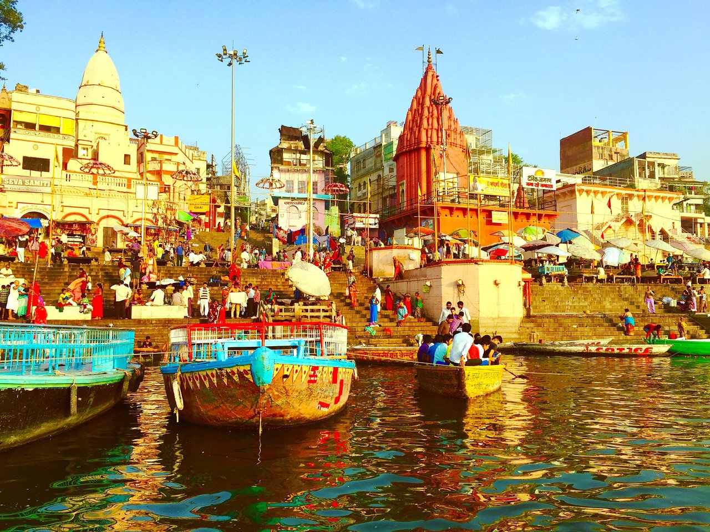
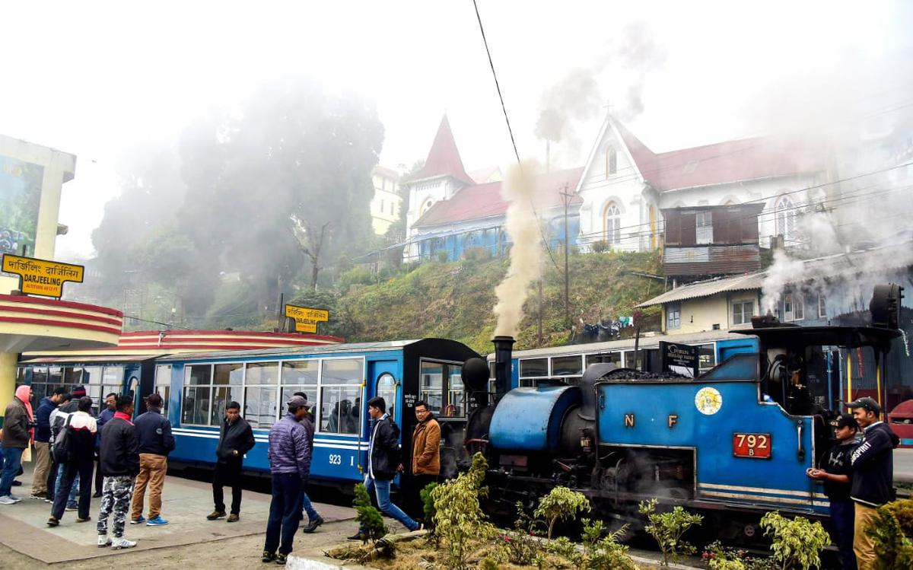
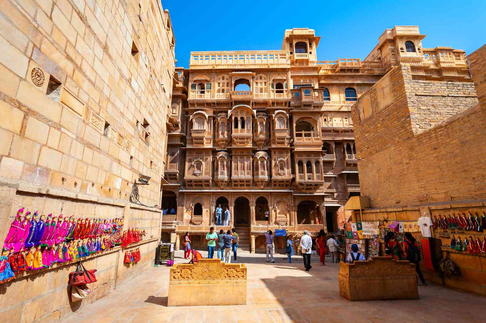

India is one of the popular tourist destinations in Asia. India has fascinated people from all over the world with her secularism and her culture. Hence, India is a country with a great potential for tourism. Bounded by the Himalayan ranges in the north and surrounded, on three sides by sea (Arabian sea, Bay of Bengal and Indian Ocean), India offers a wide array of places to see and things to do. The enchanting backwaters, hill stations and landscapes make India a beautiful country.
There are historical monuments, beaches, places of religious interests, hill resorts, etc. that attract tourists. Every region is identified with its handicraft, fairs, folk dances, music and its people. Tourism is the second largest foreign exchange earner in India. The tourism industry employs a large number of people, both skilled and unskilled. It promotes national integration and international brotherhood.
Tourism is highly labour intensive industry of a unique type. It provides different services needed as well as expected by the incoming tourists. At the world level, it is one of the largest in terms of money spent by tourists in the countries they visit. This amount is said to exceed the GNP of many countries with the sole exception of the USA. According to the latest estimates of the world travel and tourism council, this industry is expected to generate about 6 percent of India’s total employment.
Leh, Jammu & KashmirThis mountain town in Ladakh is quickly rising to the top of must-visit lists. Not surprising when you consider the sheer natural beauty of the place. The towering Himalayas supply a dramatic backdrop and plenty of opportunity for adrenaline junkies to get their fix. Rock climbing, white-water rafting and skiing are all on offer, and if you’re looking for something a little tamer, short trekking jaunts can be arranged. For a glimpse into the town’s culture and rich history, visit the Shey Palace and the many Buddhist monasteries. |
|
Varanasi , Uttar PradeshOne of most significant religious centers of Hinduism Varasani needs to visited to be believed. Bustling with devotees, sadhus, tourists and locals, the place is teeming with sights that are uniquely India. The temples and ghats (steps leading to the Ganga) with thousands of devotees performing religious rituals and dotted with Hindu priests performing rites is quite a sight to behold. The Vishwanath Temple, Sarnath Deer Park and the Ram Nagar Fort are worth a visit. Also the panchganaga, Dasaswamedh and Kedar ghats offer a great slice of Varanasi life. |
 |
 |
Manali, Himachal PradeshOne of India’s prettiest hill stations, Manali has long been a honeymooner’s paradise. But the little town nestled in the mighty Himalayas offers plenty of entertainment for adventure seekers. The Beas river has whitewater rafting and there’s skiing, trekking, paragliding and zorbing to be done all along the hilly terrain nearby. Rohtang Pass has mesmerizing views of the great mountains, the Vashisht hot water springs has bathhouses for visitors to soak in the bubbling water and then there are large and small waterfalls at short drives all around Manali, so make sure you pack your outdoor gear. |
Darjeeling, West BengalThis little tea town came into prominence during the British Raj. It was then that Darjeeling was developed as a hill station and tea plantation area, thanks to its cooler temperatures. Today, Darjeeling’s tea estates are world-renowned, but there’s more to it than its picturesque rolling hills sheathed in green. Nestled in the lesser Himalayas, Darjeeling offers breath-taking views of the great mountain including Mt Everest. Tiger Hill, at an altitude of 2,590 meters gives visitors a glimapse of the Kanchen Junga range. Plus there’s plenty of rock-climbing and trekking opportunities for the adventurous. The ropeway and cable car rides, the natural history museum, the zoological parks and botanical gardens all give tourists a flavor of the natural wealth of the Himalayas. The Darjeeling Himalayan Railway with its toy trains is also worth. Visit, being named a Word heritage Site. |
 |
|  | Jaisalmer, RajasthanThe ‘Golden City’ has long been a tourist hotspot thanks to its royal history. The dessert town boasts of the Jaisalmer fort (that houses the Raj Mahal), a number of havelis , the most impressive being the Amar Sager, Patwon-ki-Haveli and Nathmalji- ki- Haveli, and ornate Jain temples. Tourists can explore the Thar desert perched atop camels, visit the Desert National Park for a gander at eh Fauna, or the Akal wood fossil Park. Of course, there’s plenty of shopping to be done for traditional Rajasthani art , clothes and jewellery. |
Bengaluru, KarnatakaThis buzzing metro might be one of the most recognized Indian cities abroad, but the ‘Garden City’ had plenty going for it long before it became and IT hub. Bengaluru offers a blend of the old and the new and won’t disappoint. The Bangalore Palace and Summer Palace are a glimpse into the city’s royal past and the imposing Vidhana Soudha structure and example of its prosperous present. There are plenty of ancient religious centers, such as St. Mary’s Basilica, St Patric’s Church, the Masjid – e- Khadria and Shri Nimishamba Devi Temple. Younger tourists will enjoy the plentiful shopping at the many malls, all offering the biggest brands, and the thriving nightlife complete with pubs and lounge bars. |
 |
 |
Agra, Uttar PradeshAgra needs no introduction. The timeless Taj Mahal makes it to almost every must – visit list, and deservedly so. The white marble structure and the sprawling campus around it are simply magnificent. And while the Taj will be the highlight of any visit to the city, there are quite a few other architectural delights the city offers visitors. The Agra Fort is another majestic Construction, bearing plenty of evidence of the regalia of Mughal times. Some other attractions include the Sikandra complex, Swami Bagh and Itmad-ud-Daulah’s Tomb. |
Mumbai, MaharashtraThe country’s commercial capital, Mumbai’s rhythm needs to be experience to be believed. Fast-paced and constantly on the go, the city has something for everyone. Colonial architecture, diverse cuisine and plenty of entertainment options are just some of what’s in store. Shopping is a tourist’s delight, and the nightlife while have you partying away. Some of the most visits are the Gateway of India and the Taj Mahal hotel opposite, juhu Beach and Chowpatty for the fast food; and Bandra for the shopping. There’s film city for a glimpse of some Bollywood stars and drop by one of the many religious sites for some spiritual upliftment. Mt. Mary’s Church, Hanji Ali mosque, and the ISCKON temple are just some of the crowd-pullers. |
|
 |
Jaipur, RajasthanIt is jaipur’s rich history and culture that have made it one of the three major tourist centres in the state. Imposing forts, awe-inspiring palaces and exquisite temples are all there and plenty of them. Visit the Jaigarh and Amber Forts and catch the Amber sound and light show for a glimpse of the city’s history. The city palace and Jal Mahal are must-sees. There are also a number of gardens that are perfect for long walks in beautiful surrounds. |
Munnar, KeralaThis sleepy little tea town is best known (apart from its tea blends) for its rolling green hills and scenic beauty. There’s not much to do in town except for relax and take in the beauty of the place, but there are a number of attractions short distances away. Some of these include the Atukkad Falls, Mattupetti Dam, Kundala Lake and the Eravikullam National Park, where you can spot the endangered Nilgiri Thar. There are also elephant tours that can be organized from the town for the more adventurous. |
 |
 |
Hampi, KarnatakaThe ancient ruins of Hampi have been drawing tourists for decades thanks to the legendary tales of the prosperity under the Vijayanagar Empire. The ruins have been recognized as a World Heritage Site and continue to delight visitor with its stark, rocky contrast to the surrounding green. Apart from the ruins, there are a number of significant temples that include the Virupaksha Temple, the Hazara Rama Temple and the Vitthala Temple. And if it’s stunning scenery you’re after, hike up the Matanga Hill panoramic views of the city. |
Udaipur, RajathanThis Rajasthani city is tourist magnet thanks to its serene lakes and beautiful places. Topping the list of must-see sports is the Udaipur City Palace, with its impeccable maintained gardens, luxurious halls and chambers. The Pichola and Fateh Sager both offer a variety of attractions for tourists and the Saheliyon-ki – Badi has opulent gardens and fountains that are definitely worth a viewing. As with most Rajasthan cities and towns, there is plenty of shopping here. So if you’re looking for traditional arts, jewellery or clothing, Udaipur is just the place to go. |
|
New DelhiThere is plenty to see and do in the country’s capital, so make sure you draw up an itinerary. The imposing red fort and sprawling complex of Humayun’s Tomb are a definite must see, as are the Qutub Minar and Baha’I Temple. Visit Rajpath, form Rashtrapati Bhavan to India Gate to take in the majesty of the place. Drop by Connaught place for some great shopping and dining and Chandni Chowk for a true Delhi experience. |
|
Srinagar, Jammu and KashmirOnce a very popular holiday destination, political conflict in recent years has lost the city much of its tourism. But the beauty of the place still remains, and travelers are sure to catch some beautiful scenery and delicious Kashmiri culinary delights on a trip there. The Mughal Gardens, Shalimar Bagh and Pari Mahal are well – worth a visit. Take a shikara ride on the Dal Lake for some peace and tranquility and shop for exquisite Pashmina Shawls and Kashmiri rugs and carpets in the city. |
 |
Shimla, Himachal PradeshLong been a honeymoon paradise, the capital city is quaint and very picturesque. The cool climes in the summer months are a welcome relief and the snowy cold months provide for plenty of winter activity. Some of the attractions within the city include the Jakhu Temple, Christ Church, Viceregal Lodge and a stroll on Mall road. The hilly terrains also offers plenty of trekking opportunities and in the winters there’s ice skating as well. |
|
GoaNow this one’s a no – brainer. No India holiday list could be considered complete without this beach paradise. This former Portuguese colony has something for everyone temples and churches galore for the culture vultures; pubs and bars for the party animals; restaurants that boast just about every cuisine under the sun; hotels and resorts that offers every activity you can think of , so you don’t really need to leave the premises; and of course the beautiful beaches. Some attractions are the weekly flea market at Anjuan; the pristine beaches in South Goa; the Doodhsagar waterfalls and the many temples and churches that dot this state. Inffantaria and Souza Loboa are great for Goan cuisine and continental delights. A word of advice , the monoon is not the best time to visit. Most of the beaches are shutdown due to rough seas and the hotels follow suit. The roads will be water logged making getting around difficult and most tourist attractions close their doors. |
|
Pune, MaharashtraOften called the cultural capital of the state, Pune is where the Marathi film industry is based and also where many esteemed centres of higher learning have been established. The city has 4 museums that tourists can visit including the Raja Dinkar Kelkar Museum, the National War Museum, and places such as Shaniwar Wada and the Aga Khan Palace. Adventure seekers should drop by the Pataleswar Caves, the Bhimashankar Sanctuary to trek up one of the many nearby forts. |
|
Rishikesh, UttarakhandAnother important centre of Hinduism, Rishikesh lies along the Ganga river and the Char Dham Yatra, one of the faith’s most holy pilgrimages, typically beings here. Apt from its religious significance, it is also a major centre for yoga and the town is dotted with yoga and meditation schools. For travelers looking a little adventure can opt for white water rafting, kayaking on the river and rappelling , trekking and even bungee jumping along the Himalayas nearby. |
|
Hyderabad, Andhra PradeshOne of the country’s rapidly growing IT hubs, this capital city also boasts a rich cultural heritage going back many centuries. The famed Charminar and Golconda fort are big tourist draws and the market around Charminar is great for a bargain. Another architectural gems include the Falaknuma Palace and Mecca Masjid. The HUssain Sager and Sharmipet lakes and the gardesn and parks nearby all present wonderful picnic opportunities. Of course, there are numerous mosques and temples to not only seek come spiritual upliftment but also to feast your eyes on. And while your travelling the length and breadth of the city, make sure to load up on plenty of Hyderabadi biryani, you won’t regret it! |
|
Kolkata, West BengalOften called the cultural capital of the country, Kolkata has a lot to offer tourists who are open to new experiences. The Victoria Memorial and Birla Planetarium are Definite must-sees as are the famous Howrah Bridge and Tagore House (where the great poet was born). Of course one of the highlights is the food. Drop by chowringhee Lane for a taste of the street food and make sure you’re not on a diet when you come to Kolkata, because turning down the juicy Bengali sandesh would simply be a shame. |
 |
 |
Chennai, Tamil NaduThe state’s capital city, Chennai is a bustling metropolis, and offers visitors plenty to do and see. The marina Beach is the most popular of the beaches, while Edward Elliot’s Beach is quieter just as scenic. There are plenty of old churches, temples and mosques to visit. There’s also the Arinjara Anna Zoological Park and Guindy National Park for nature lovers and the Pondy Bazaar and Ranganathan street for those looking to test their bargaining skills. |
Dharamsala, Himachal PradeshOne of the most popular centres of Buddhism , the little town draws a number of celebrity tourists every year. McLeod Ganj, a suburb within the town, is home to the Dalai Lama and is a major tourist draw. While actually meeting or even seeing the spiritual leader is a tough ask, most tourists try their lich when they visit the place. If luck isn’t on your side, there are a number of other tourist attractions in and around town to make it well worth the trip. The Bhagsunag Falls and Pong Dam lake are ideal for picnics. Monasteries and temples dot the town and most are open to tourists. For those looking for a thrill try the paragliding at Bir or the many treks that start from town. There are also plenty of Meditation and rejuvenation centres if you’re looking for a little peace and tranquility. |
|
 |
PuducherryA quiet little union territory has an interesting history, being the largest of the erstwhile French colonies in India. French is still widely understood here and the architecture and eating spots still continue with the cultural influences. The town moves along at a relaxed paced and there’s not much to do besides walking around taking in the environs so different from any other place in the country. Some of the popular tourist sports are the beaches (Paradise and Aura), the Aurobindo Ashram and the Boat House. There are also plenty of places to get some great French and European cuisine, so if you’re in the mood to experiment; this is the place for you ! |
Amritsar, PunjabThe spiritual centre of Sikhism, the Golden Temple, is situated at Amritsar and draw tens of Thousands of devotees and tourists every years. The temple has a sprawling complex with the central building housing the Harmandir Sahib situated in the middle of the Amrit Sarovar pool. Apart from the temple, there are a few other places of interest as well. The Jallianwala Bagh, where over 1570 unarmed people were killed by British Indian army soldiers, still stands and a memorial has been erected in remembrance. The summer place and Mata Temple are both worth a visit as well. Visitors can also travel to the Wagah border (27 km away), where there is a flag raising ceremony on both the India and Pakistan border every day. |
 |
 |
Kodaikanal, Tamil NaduNested in the forested palani hills, Kodai offers scenic lakers, waterfalls, beautiful valley views and observation points galore. Some of the must-visit spots include the Berijam Lake (where special permission is required before tourists can visit), the Kodai Lake (for day picnics and boating ) and the sprawling Bryant park. |